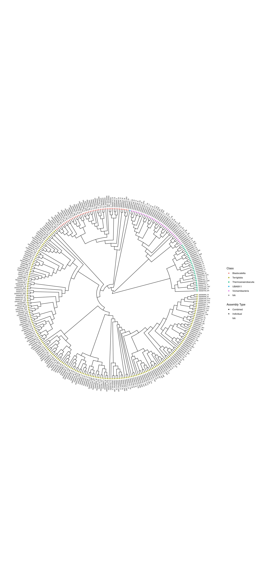

install.packages("rlang")Installing package into '/cloud/lib/x86_64-pc-linux-gnu-library/4.3'
(as 'lib' is unspecified)install.packages("rlang")Installing package into '/cloud/lib/x86_64-pc-linux-gnu-library/4.3'
(as 'lib' is unspecified)# Bioconductor version
if (!require("BiocManager", quietly = TRUE))
install.packages("BiocManager")Bioconductor version '3.18' is out-of-date; the current release version '3.19'
is available with R version '4.4'; see https://bioconductor.org/installBiocManager::install("treeio")'getOption("repos")' replaces Bioconductor standard repositories, see
'help("repositories", package = "BiocManager")' for details.
Replacement repositories:
CRAN: http://rspm/default/__linux__/focal/latestBioconductor version 3.18 (BiocManager 1.30.23), R 4.3.3 (2024-02-29)Warning: package(s) not installed when version(s) same as or greater than current; use
`force = TRUE` to re-install: 'treeio'Installation paths not writeable, unable to update packages
path: /opt/R/4.3.3/lib/R/library
packages:
boot, codetools, lattice, survivalBiocManager::install("ggtree")'getOption("repos")' replaces Bioconductor standard repositories, see
'help("repositories", package = "BiocManager")' for details.
Replacement repositories:
CRAN: http://rspm/default/__linux__/focal/latest
Bioconductor version 3.18 (BiocManager 1.30.23), R 4.3.3 (2024-02-29)Warning: package(s) not installed when version(s) same as or greater than current; use
`force = TRUE` to re-install: 'ggtree'Installation paths not writeable, unable to update packages
path: /opt/R/4.3.3/lib/R/library
packages:
boot, codetools, lattice, survivalBiocManager::install("ggimage")'getOption("repos")' replaces Bioconductor standard repositories, see
'help("repositories", package = "BiocManager")' for details.
Replacement repositories:
CRAN: http://rspm/default/__linux__/focal/latest
Bioconductor version 3.18 (BiocManager 1.30.23), R 4.3.3 (2024-02-29)Warning: package(s) not installed when version(s) same as or greater than current; use
`force = TRUE` to re-install: 'ggimage'Installation paths not writeable, unable to update packages
path: /opt/R/4.3.3/lib/R/library
packages:
boot, codetools, lattice, survivalBiocManager::install("ggtreeExtra")'getOption("repos")' replaces Bioconductor standard repositories, see
'help("repositories", package = "BiocManager")' for details.
Replacement repositories:
CRAN: http://rspm/default/__linux__/focal/latest
Bioconductor version 3.18 (BiocManager 1.30.23), R 4.3.3 (2024-02-29)Warning: package(s) not installed when version(s) same as or greater than current; use
`force = TRUE` to re-install: 'ggtreeExtra'Installation paths not writeable, unable to update packages
path: /opt/R/4.3.3/lib/R/library
packages:
boot, codetools, lattice, survivallibrary(tidyverse)── Attaching core tidyverse packages ──────────────────────── tidyverse 2.0.0 ──
✔ dplyr 1.1.4 ✔ readr 2.1.5
✔ forcats 1.0.0 ✔ stringr 1.5.1
✔ ggplot2 3.5.1 ✔ tibble 3.2.1
✔ lubridate 1.9.3 ✔ tidyr 1.3.1
✔ purrr 1.0.2
── Conflicts ────────────────────────────────────────── tidyverse_conflicts() ──
✖ dplyr::filter() masks stats::filter()
✖ dplyr::lag() masks stats::lag()
ℹ Use the conflicted package (<http://conflicted.r-lib.org/>) to force all conflicts to become errorslibrary(knitr)
library(DT)
library(plotly)
Attaching package: 'plotly'
The following object is masked from 'package:ggplot2':
last_plot
The following object is masked from 'package:stats':
filter
The following object is masked from 'package:graphics':
layoutlibrary(dplyr)
library(ggplot2)
library(zoo)
Attaching package: 'zoo'
The following objects are masked from 'package:base':
as.Date, as.Date.numericlibrary(ggimage)
library(rphylopic)You are using rphylopic v.1.4.0. Please remember to credit PhyloPic contributors (hint: `get_attribution()`) and cite rphylopic in your work (hint: `citation("rphylopic")`).
Attaching package: 'rphylopic'
The following object is masked from 'package:ggimage':
geom_phylopiclibrary(treeio)treeio v1.26.0 For help: https://yulab-smu.top/treedata-book/
If you use the ggtree package suite in published research, please cite
the appropriate paper(s):
LG Wang, TTY Lam, S Xu, Z Dai, L Zhou, T Feng, P Guo, CW Dunn, BR
Jones, T Bradley, H Zhu, Y Guan, Y Jiang, G Yu. treeio: an R package
for phylogenetic tree input and output with richly annotated and
associated data. Molecular Biology and Evolution. 2020, 37(2):599-603.
doi: 10.1093/molbev/msz240
Shuangbin Xu, Lin Li, Xiao Luo, Meijun Chen, Wenli Tang, Li Zhan, Zehan
Dai, Tommy T. Lam, Yi Guan, Guangchuang Yu. Ggtree: A serialized data
object for visualization of a phylogenetic tree and annotation data.
iMeta 2022, 1(4):e56. doi:10.1002/imt2.56
Guangchuang Yu. Using ggtree to visualize data on tree-like structures.
Current Protocols in Bioinformatics. 2020, 69:e96. doi:10.1002/cpbi.96library(tidytree)If you use the ggtree package suite in published research, please cite
the appropriate paper(s):
G Yu. Data Integration, Manipulation and Visualization of Phylogenetic
Trees (1st ed.). Chapman and Hall/CRC. 2022. ISBN: 9781032233574
S Xu, Z Dai, P Guo, X Fu, S Liu, L Zhou, W Tang, T Feng, M Chen, L
Zhan, T Wu, E Hu, Y Jiang, X Bo, G Yu. ggtreeExtra: Compact
visualization of richly annotated phylogenetic data. Molecular Biology
and Evolution. 2021, 38(9):4039-4042. doi: 10.1093/molbev/msab166
Attaching package: 'tidytree'
The following object is masked from 'package:treeio':
getNodeNum
The following object is masked from 'package:stats':
filterlibrary(ape)
Attaching package: 'ape'
The following objects are masked from 'package:tidytree':
drop.tip, keep.tip
The following object is masked from 'package:treeio':
drop.tip
The following object is masked from 'package:dplyr':
wherelibrary(TreeTools)
Attaching package: 'TreeTools'
The following object is masked from 'package:tidytree':
MRCA
The following object is masked from 'package:treeio':
MRCAlibrary(phytools)Loading required package: maps
Attaching package: 'maps'
The following object is masked from 'package:purrr':
map
Attaching package: 'phytools'
The following object is masked from 'package:TreeTools':
as.multiPhylo
The following object is masked from 'package:treeio':
read.newicklibrary(ggtree)ggtree v3.10.1 For help: https://yulab-smu.top/treedata-book/
If you use the ggtree package suite in published research, please cite
the appropriate paper(s):
Guangchuang Yu, David Smith, Huachen Zhu, Yi Guan, Tommy Tsan-Yuk Lam.
ggtree: an R package for visualization and annotation of phylogenetic
trees with their covariates and other associated data. Methods in
Ecology and Evolution. 2017, 8(1):28-36. doi:10.1111/2041-210X.12628
Guangchuang Yu. Data Integration, Manipulation and Visualization of
Phylogenetic Trees (1st edition). Chapman and Hall/CRC. 2022,
doi:10.1201/9781003279242
Shuangbin Xu, Lin Li, Xiao Luo, Meijun Chen, Wenli Tang, Li Zhan, Zehan
Dai, Tommy T. Lam, Yi Guan, Guangchuang Yu. Ggtree: A serialized data
object for visualization of a phylogenetic tree and annotation data.
iMeta 2022, 1(4):e56. doi:10.1002/imt2.56
Attaching package: 'ggtree'
The following object is masked from 'package:TreeTools':
MRCA
The following object is masked from 'package:ape':
rotate
The following object is masked from 'package:tidyr':
expandlibrary(TDbook)
library(ggnewscale)
library(ggtreeExtra)ggtreeExtra v1.12.0 For help: https://yulab-smu.top/treedata-book/
If you use the ggtree package suite in published research, please cite
the appropriate paper(s):
S Xu, Z Dai, P Guo, X Fu, S Liu, L Zhou, W Tang, T Feng, M Chen, L
Zhan, T Wu, E Hu, Y Jiang, X Bo, G Yu. ggtreeExtra: Compact
visualization of richly annotated phylogenetic data. Molecular Biology
and Evolution. 2021, 38(9):4039-4042. doi: 10.1093/molbev/msab166library(ggstar)NEON_MAGs <- read_csv("data/GOLD_Study_ID_Gs0161344_NEON.csv")Rows: 1754 Columns: 19
── Column specification ────────────────────────────────────────────────────────
Delimiter: ","
chr (8): Bin ID, Genome Name, Bin Quality, Bin Lineage, GTDB-Tk Taxonomy L...
dbl (10): IMG Genome ID, Bin Completeness, Bin Contamination, Total Number ...
date (1): Date Added
ℹ Use `spec()` to retrieve the full column specification for this data.
ℹ Specify the column types or set `show_col_types = FALSE` to quiet this message.head(NEON_MAGs)# A tibble: 6 × 19
`Bin ID` `Genome Name` `IMG Genome ID` `Bin Quality` `Bin Lineage`
<chr> <chr> <dbl> <chr> <chr>
1 3300060887_39 Terrestrial soil … 3300060887 MQ Archaea
2 3300060914_30 Terrestrial soil … 3300060914 MQ Archaea
3 3300060650_39 Terrestrial soil … 3300060650 MQ Archaea; Eur…
4 3300067032_2117 NEON combined ass… 3300067032 MQ Archaea; Eur…
5 3300060650_21 Terrestrial soil … 3300060650 MQ Archaea; Eur…
6 3300060650_24 Terrestrial soil … 3300060650 MQ Archaea; Eur…
# ℹ 14 more variables: `GTDB-Tk Taxonomy Lineage` <chr>, `Bin Methods` <chr>,
# `Created By` <chr>, `Date Added` <date>, `Bin Completeness` <dbl>,
# `Bin Contamination` <dbl>, `Total Number of Bases` <dbl>, `5s rRNA` <dbl>,
# `16s rRNA` <dbl>, `23s rRNA` <dbl>, `tRNA Genes` <dbl>, `Gene Count` <dbl>,
# `Scaffold Count` <dbl>, `GOLD Study ID` <chr>str(NEON_MAGs)spc_tbl_ [1,754 × 19] (S3: spec_tbl_df/tbl_df/tbl/data.frame)
$ Bin ID : chr [1:1754] "3300060887_39" "3300060914_30" "3300060650_39" "3300067032_2117" ...
$ Genome Name : chr [1:1754] "Terrestrial soil microbial communities from Guanica State Forest and Biosphere Reserve, Puerto Rico - GUAN_042-"| __truncated__ "Terrestrial soil microbial communities from Guanica State Forest and Biosphere Reserve, Puerto Rico - GUAN_043-"| __truncated__ "Terrestrial soil microbial communities from Healy, Denali National Park, Alaska, USA - HEAL_048-O-20210622-comp-1" "NEON combined assembly" ...
$ IMG Genome ID : num [1:1754] 3.3e+09 3.3e+09 3.3e+09 3.3e+09 3.3e+09 ...
$ Bin Quality : chr [1:1754] "MQ" "MQ" "MQ" "MQ" ...
$ Bin Lineage : chr [1:1754] "Archaea" "Archaea" "Archaea; Euryarchaeota; Methanobacteria; Methanobacteriales; Methanobacteriaceae; Methanobacterium; Methanobact"| __truncated__ "Archaea; Euryarchaeota; Methanobacteria; Methanobacteriales; Methanobacteriaceae; Methanobacterium; Methanobact"| __truncated__ ...
$ GTDB-Tk Taxonomy Lineage: chr [1:1754] NA NA NA NA ...
$ Bin Methods : chr [1:1754] "MetaBAT v2:2.15, CheckM v1.2.1, GTDB-tk v2.1.1, GTDB database release R207_v2" "MetaBAT v2:2.15, CheckM v1.2.1, GTDB-tk v2.1.1, GTDB database release R207_v2" "MetaBAT v2:2.15, CheckM v1.2.1, GTDB-tk v2.1.1, GTDB database release R207_v2" "MetaBAT v2:2.17, CheckM v1.2.1, GTDB-tk v2.1.1, GTDB database release R207_v2" ...
$ Created By : chr [1:1754] "IMG_PIPELINE" "IMG_PIPELINE" "IMG_PIPELINE" "IMG_PIPELINE" ...
$ Date Added : Date[1:1754], format: "2023-04-16" "2023-04-14" ...
$ Bin Completeness : num [1:1754] 89.8 96.1 76 83.7 96.7 ...
$ Bin Contamination : num [1:1754] 2.43 1.94 0.8 0.8 2.21 1.31 0.65 0 2.91 2.91 ...
$ Total Number of Bases : num [1:1754] 4009591 3938282 1690610 1598271 3294725 ...
$ 5s rRNA : num [1:1754] 1 1 0 0 1 0 1 1 1 1 ...
$ 16s rRNA : num [1:1754] 0 0 0 0 0 1 1 0 0 0 ...
$ 23s rRNA : num [1:1754] 0 0 0 0 0 0 0 0 0 1 ...
$ tRNA Genes : num [1:1754] 41 43 25 33 50 42 46 42 27 27 ...
$ Gene Count : num [1:1754] 4918 4828 2012 1876 3082 ...
$ Scaffold Count : num [1:1754] 399 375 170 75 86 332 67 177 330 346 ...
$ GOLD Study ID : chr [1:1754] "Gs0161344" "Gs0161344" "Gs0161344" "Gs0161344" ...
- attr(*, "spec")=
.. cols(
.. `Bin ID` = col_character(),
.. `Genome Name` = col_character(),
.. `IMG Genome ID` = col_double(),
.. `Bin Quality` = col_character(),
.. `Bin Lineage` = col_character(),
.. `GTDB-Tk Taxonomy Lineage` = col_character(),
.. `Bin Methods` = col_character(),
.. `Created By` = col_character(),
.. `Date Added` = col_date(format = ""),
.. `Bin Completeness` = col_double(),
.. `Bin Contamination` = col_double(),
.. `Total Number of Bases` = col_double(),
.. `5s rRNA` = col_double(),
.. `16s rRNA` = col_double(),
.. `23s rRNA` = col_double(),
.. `tRNA Genes` = col_double(),
.. `Gene Count` = col_double(),
.. `Scaffold Count` = col_double(),
.. `GOLD Study ID` = col_character()
.. )
- attr(*, "problems")=<externalptr> NEON_MAGs <- read_csv("data/GOLD_Study_ID_Gs0161344_NEON.csv") %>%
select(-c(`GOLD Study ID`, `Bin Methods`, `Created By`, `Date Added`)) %>%
mutate("Assembly Type" = case_when(`Genome Name` == "NEON combined assembly" ~ `Genome Name`,
TRUE ~ "Individual")) %>%
mutate_at("Assembly Type", str_replace, "NEON combined assembly", "Combined") %>%
separate(`GTDB-Tk Taxonomy Lineage`, c("Domain", "Phylum", "Class", "Order", "Family", "Genus"), "; ", remove = FALSE) %>%
mutate_at("Genome Name", str_replace, "Terrestrial soil microbial communities from ", "") %>%
separate(`Genome Name`, c("Site","Sample Name"), " - ") %>%
mutate_at("Sample Name", str_replace, "-comp-1", "") %>%
separate(`Sample Name`, c("Site ID","subplot.layer.date"), "_", remove = FALSE,) %>%
separate(`subplot.layer.date`, c("Subplot", "Layer", "Date"), "-") Rows: 1754 Columns: 19
── Column specification ────────────────────────────────────────────────────────
Delimiter: ","
chr (8): Bin ID, Genome Name, Bin Quality, Bin Lineage, GTDB-Tk Taxonomy L...
dbl (10): IMG Genome ID, Bin Completeness, Bin Contamination, Total Number ...
date (1): Date Added
ℹ Use `spec()` to retrieve the full column specification for this data.
ℹ Specify the column types or set `show_col_types = FALSE` to quiet this message.Warning: Expected 6 pieces. Additional pieces discarded in 29 rows [54, 232, 267, 328,
389, 400, 439, 473, 529, 531, 538, 669, 936, 1016, 1118, 1240, 1323, 1330,
1477, 1484, ...].Warning: Expected 6 pieces. Missing pieces filled with `NA` in 429 rows [46, 50, 53, 55,
56, 57, 61, 62, 65, 66, 67, 71, 76, 78, 79, 81, 89, 92, 96, 99, ...].Warning: Expected 2 pieces. Missing pieces filled with `NA` in 624 rows [4, 7, 8, 236,
237, 238, 239, 240, 241, 242, 243, 244, 245, 246, 247, 248, 249, 250, 251, 252,
...].NEON_MAGs_bact_ind <- NEON_MAGs %>%
filter(Domain == "Bacteria") %>%
filter(`Assembly Type` == "Individual") NEON_MAGs_Ind <- NEON_MAGs %>%
filter(`Site` != "NEON combined assembly") NEON_MAGs_co <- NEON_MAGs %>%
filter(`Assembly Type` == "Combined") NEON_MAGs_ind <- NEON_MAGs %>%
filter(`Assembly Type` == "Individual") sankey_data <- NEON_MAGs_co %>%
select(`GTDB-Tk Taxonomy Lineage`) %>%
# NAs are likely Archaea
replace_na(list(`GTDB-Tk Taxonomy Lineage` = 'Archaea')) %>%
# Pavian format requires p__ etc
separate(`GTDB-Tk Taxonomy Lineage`, c("Domain", "Phylum", "Class", "Order", "Family", "Genus", "Species"), "; ") Warning: Expected 7 pieces. Missing pieces filled with `NA` in 616 rows [1, 2, 3, 4, 5,
6, 7, 8, 9, 10, 11, 12, 13, 14, 15, 16, 17, 18, 19, 20, ...].sankey_data[] <- t(apply(sankey_data, 1, zoo::na.locf))
# Put the data into a format that can be read by the Sankey App
sankey_data <- sankey_data %>%
unite(col = "classification", c(Domain, Phylum, Class, Order, Family, Genus, Species), sep='; ') %>%
mutate_at("classification", str_replace, "Archaea", "d__Archaea") %>%
mutate_at("classification", str_replace, "Bacteria", "d__Bacteria") %>%
mutate_at("classification", str_replace, "; ", "|p__") %>%
mutate_at("classification", str_replace, "; ", "|c__") %>%
mutate_at("classification", str_replace, "; ", "|o__") %>%
mutate_at("classification", str_replace, "; ", "|f__") %>%
mutate_at("classification", str_replace, "; ", "|g__") %>%
mutate_at("classification", str_replace, "; ", "|s__")
# Create format for Pavian with counts for each taxonomic level
sankey_data_s <- sankey_data
sankey_data_g <- sankey_data
sankey_data_f <- sankey_data
sankey_data_o <- sankey_data
sankey_data_c <- sankey_data
sankey_data_p <- sankey_data
sankey_data_d <- sankey_data
sankey_data_g$classification <- sub("\\|s__.*", "", sankey_data_g$classification)
sankey_data_f$classification <- sub("\\|g__.*", "", sankey_data_f$classification)
sankey_data_o$classification <- sub("\\|f__.*", "", sankey_data_o$classification)
sankey_data_c$classification <- sub("\\|o__.*", "", sankey_data_c$classification)
sankey_data_p$classification <- sub("\\|c__.*", "", sankey_data_p$classification)
sankey_data_d$classification <- sub("\\|p__.*", "", sankey_data_d$classification)
sankey_data_allTaxa <- bind_rows(sankey_data_s, sankey_data_g, sankey_data_f, sankey_data_o, sankey_data_c, sankey_data_p, sankey_data_d) %>%
mutate(classification = as.factor(classification)) %>%
count(classification) %>%
# rename for Pavian format
rename(`#SampleID` = `classification`) %>%
rename(`Metaphlan2_Analysis` = `n`)
# Write file to input to Pavian Sankey
write_tsv(sankey_data_allTaxa, "data/NEON_MAG_co_pavian.txt")NEON_MAGs_Ind_tax <- NEON_MAGs_Ind %>%
separate(`GTDB-Tk Taxonomy Lineage`, c("Domain", "Phylum", "Class", "Order", "Family", "Genus"), "; ", remove = FALSE) Warning: Expected 6 pieces. Additional pieces discarded in 21 rows [51, 229, 272, 283,
302, 346, 348, 355, 675, 793, 851, 858, 951, 956, 959, 972, 981, 996, 997,
1037, ...].Warning: Expected 6 pieces. Missing pieces filled with `NA` in 282 rows [43, 47, 50, 52,
53, 54, 58, 59, 62, 63, 64, 68, 73, 75, 76, 78, 86, 89, 93, 96, ...].datatable(
NEON_MAGs_Ind_tax %>%
count(Phylum, sort = TRUE)
)NEON_MAGs_Ind_tax_sample <- NEON_MAGs_Ind_tax %>%
# Get rid of the the common string "Soil microbial communities from "
mutate_at("Site", str_replace, "Terrestrial soil microbial communities from ", "") %>%
# Use the first `-` to split the column in two
separate(`Site`, c("Site","Sample Name"), " - ") %>%
# Get rid of the the common string "S-comp-1"
mutate_at("Sample Name", str_replace, "-comp-1", "") %>%
# separate the Sample Name into Site ID and plot info
separate(`Sample Name`, c("Site ID","subplot.layer.date"), "_", remove = FALSE,) %>%
# separate the plot info into 3 columns
separate(`subplot.layer.date`, c("Subplot", "Layer", "Date"), "-") Warning: Expected 2 pieces. Missing pieces filled with `NA` in 1130 rows [1, 2, 3, 4, 5,
6, 7, 8, 9, 10, 11, 12, 13, 14, 15, 16, 17, 18, 19, 20, ...].datatable(
NEON_MAGs_Ind_tax_sample %>%
count(Site, sort = TRUE)
)datatable(
NEON_MAGs_Ind_tax %>%
count(Phylum, sort = TRUE)
)NEON_MAGs_bact_ind %>%
ggplot(aes(x = fct_rev(fct_infreq(Subplot)), fill = Site)) +
geom_bar() +
coord_flip() +
theme(axis.text.x = element_text(angle=45, vjust=1, hjust=1), axis.text.y = element_text(size = 5)) +
labs(title = "MAG Counts for Each Subplot", x = "Subplot", y = "Count") +
theme_classic()NEON_MAGs_bact_ind %>%
ggplot(aes(x = fct_rev(fct_infreq(Site)), fill = Phylum)) +
geom_bar() +
coord_flip() +
theme(axis.text.x = element_text(size=10), axis.text.y = element_text(size=5)) +
labs(title = "MAGs Found at Each Site (By Phylum)", x = "Site", y = "Count") NEON_MAGs_bact_ind %>%
filter(is.na(Genus)) %>%
ggplot(aes(x =fct_infreq(Phylum))) +
geom_bar() +
coord_flip() +
theme(axis.text.x = element_text(angle=45, vjust=1, hjust=1), axis.text.y = element_text(size = 5)) +
labs(title = "Phyla with Novel Genera", x = "Phylum", y = "Count of Novel Bacteria") +
theme_classic()
WREF_Data <- NEON_MAGs %>%
filter(`Site ID` == "WREF")WREF_Data %>%
ggplot(aes(x = `Bin Quality`)) +
geom_bar() +
theme(axis.text.x = element_text(angle=45, vjust=1, hjust=1), axis.text.y = element_text(size = 5)) +
labs(title = "Bacteria Quality at WREF", x = "Quality", y = "Count of Bacteria") +
theme_classic()WREF_Data %>%
ggplot(aes(x = `Layer`)) +
geom_bar() +
theme(axis.text.x = element_text(angle=45, vjust=1, hjust=1), axis.text.y = element_text(size = 5)) +
labs(title = "Soil Composition at WREF", x = "Layer", y = "Count of Bacteria") +
theme_classic()WREF_Data %>%
ggplot(aes(x = fct_infreq(Phylum), fill = Class)) +
geom_bar() +
coord_flip() +
theme(axis.text.x = element_text(angle=45, vjust=1, hjust=1), axis.text.y = element_text(size = 3))+
labs(title = "Number of MAGs Per Phylum at WREF", x = "Phylum", y = "MAGs")
Acido_Data <- NEON_MAGs %>%
filter(Phylum == "Acidobacteriota")Acido_Data %>%
ggplot(aes(x = fct_rev(fct_infreq(Site)), fill = Class)) +
geom_bar(position = position_dodge2(width = 0.9, preserve = "single")) +
coord_flip() +
theme(axis.text.x = element_text(size=10), axis.text.y = element_text(size=5)) +
labs(title = "Acidobacteria Found at Each Site (By Class)", x = "Site", y = "Count") Acido_Data %>%
ggplot(aes(x = fct_rev(fct_infreq(Site)), fill = Order)) +
geom_bar(position = position_dodge2(width = 0.9, preserve = "single")) +
coord_flip() +
theme(axis.text.x = element_text(size=10), axis.text.y = element_text(size=5)) +
labs(title = "Acido. Orders at Each Site", x = "Site", y = "Count") NEON_metagenomes <- read_tsv("data/exported_img_data_Gs0161344_NEON.tsv") %>%
rename(`Genome Name` = `Genome Name / Sample Name`) %>%
filter(str_detect(`Genome Name`, 're-annotation', negate = T)) %>%
filter(str_detect(`Genome Name`, 'WREF plot', negate = T)) Rows: 176 Columns: 46
── Column specification ────────────────────────────────────────────────────────
Delimiter: "\t"
chr (18): Domain, Sequencing Status, Study Name, Genome Name / Sample Name, ...
dbl (16): taxon_oid, IMG Genome ID, Depth In Meters, Elevation In Meters, Ge...
lgl (12): Altitude In Meters, Chlorophyll Concentration, Longhurst Code, Lon...
ℹ Use `spec()` to retrieve the full column specification for this data.
ℹ Specify the column types or set `show_col_types = FALSE` to quiet this message.NEON_metagenomes <- NEON_metagenomes %>%
# Get rid of the the common string "Soil microbial communities from "
mutate_at("Genome Name", str_replace, "Terrestrial soil microbial communities from ", "") %>%
# Use the first `-` to split the column in two
separate(`Genome Name`, c("Site","Sample Name"), " - ") %>%
# Get rid of the the common string "-comp-1"
mutate_at("Sample Name", str_replace, "-comp-1", "") %>%
# separate the Sample Name into Site ID and plot info
separate(`Sample Name`, c("Site ID","subplot.layer.date"), "_", remove = FALSE,) %>%
# separate the plot info into 3 columns
separate(`subplot.layer.date`, c("Subplot", "Layer", "Date"), "-") Warning: Expected 2 pieces. Missing pieces filled with `NA` in 1 rows [53].NEON_chemistry <- read_tsv("data/neon_plot_soilChem1_metadata.tsv") %>%
# remove -COMP from genomicsSampleID
mutate_at("genomicsSampleID", str_replace, "-COMP", "") Rows: 87 Columns: 17
── Column specification ────────────────────────────────────────────────────────
Delimiter: "\t"
chr (5): genomicsSampleID, siteID, plotID, nlcdClass, horizon
dbl (11): decimalLatitude, decimalLongitude, elevation, soilTemp, d15N, org...
date (1): collectionDate
ℹ Use `spec()` to retrieve the full column specification for this data.
ℹ Specify the column types or set `show_col_types = FALSE` to quiet this message.NEON_MAGs %>%
left_join(NEON_metagenomes, by = "Site ID") %>%
left_join(NEON_chemistry, by = c("Site ID" = "siteID")) %>%
filter(Phylum == "Acidobacteriota") %>%
ggplot(aes(x = fct_infreq(`Site ID`), y = `soilTemp`)) +
geom_boxplot() +
theme(axis.text.x = element_text(angle=45, vjust=1, hjust=1)) +
labs(title = "Soil Temp by Site", x = "Site ID", y = "Soil Temp")Warning in left_join(., NEON_metagenomes, by = "Site ID"): Detected an unexpected many-to-many relationship between `x` and `y`.
ℹ Row 1 of `x` matches multiple rows in `y`.
ℹ Row 12 of `y` matches multiple rows in `x`.
ℹ If a many-to-many relationship is expected, set `relationship =
"many-to-many"` to silence this warning.Warning in left_join(., NEON_chemistry, by = c(`Site ID` = "siteID")): Detected an unexpected many-to-many relationship between `x` and `y`.
ℹ Row 1 of `x` matches multiple rows in `y`.
ℹ Row 1 of `y` matches multiple rows in `x`.
ℹ If a many-to-many relationship is expected, set `relationship =
"many-to-many"` to silence this warning.Warning: Removed 188 rows containing non-finite outside the scale range
(`stat_boxplot()`).NEON_MAGs %>%
left_join(NEON_metagenomes, by = "Sample Name") %>%
left_join(NEON_chemistry, by = c("Sample Name" = "genomicsSampleID")) %>%
filter(Phylum == "Acidobacteriota") %>%
ggplot(aes(x = fct_infreq(`Ecosystem Subtype`), y = soilTemp)) +
geom_point(aes(color=Class)) +
theme(axis.text.x = element_text(angle=45, vjust=1, hjust=1)) +
labs(title = "Soil Temp by Ecosystem Subtype", x = "Ecosystem Subtype", y = "Soil Temp")Warning: Removed 125 rows containing missing values or values outside the scale range
(`geom_point()`).NEON_MAGs %>%
left_join(NEON_metagenomes, by = "Sample Name") %>%
left_join(NEON_chemistry, by = c("Sample Name" = "genomicsSampleID")) %>%
filter(Phylum == "Acidobacteriota") %>%
ggplot(aes(x = fct_infreq(`Ecosystem Subtype`), y = soilInCaClpH)) +
geom_point(aes(color=Class), size = 2) +
theme(axis.text.x = element_text(angle=45, vjust=1, hjust=1)) +
labs(title = "Soil in CaCL pH by NLCD Class", x = "Ecosystem Subtype", y = "Soil in CaCl pH") +
theme(legend.title = element_text(size=4), legend.text=element_text(size=4))Warning: Removed 125 rows containing missing values or values outside the scale range
(`geom_point()`).NEON_MAGs %>%
left_join(NEON_metagenomes, by = "Sample Name") %>%
left_join(NEON_chemistry, by = c("Sample Name" = "genomicsSampleID")) %>%
filter(Phylum == "Acidobacteriota") %>%
ggplot(aes(x = fct_infreq(Class), y = soilInWaterpH)) +
geom_bin_2d() +
theme(axis.text.x = element_text(angle=90, vjust=1, hjust=1)) +
labs(title = "Class v Soil pH in Water", x = "Class", y = "Soil pH in Water") +
theme(legend.title = element_text(size=4), legend.text=element_text(size=4))Warning: Removed 125 rows containing non-finite outside the scale range
(`stat_bin2d()`).NEON_MAGs %>%
left_join(NEON_metagenomes, by = "Sample Name") %>%
left_join(NEON_chemistry, by = c("Sample Name" = "genomicsSampleID")) %>%
filter(Phylum == "Acidobacteriota") %>%
ggplot(aes(x = soilTemp, y = elevation)) +
geom_point(aes(color= siteID), size = 2) +
theme(axis.text.x = element_text(angle=90, vjust=1, hjust=1)) +
labs(title = "Soil Temp v Elevation (By Site)", x = "Soil Temp", y = "Elevation") +
theme(legend.title = element_text(size=4), legend.text=element_text(size=4))Warning: Removed 125 rows containing missing values or values outside the scale range
(`geom_point()`).NEON_MAGs <- read_csv("data/GOLD_Study_ID_Gs0161344_NEON_2024_4_21.csv") %>%
# remove columns that are not needed for data analysis
select(-c(`GOLD Study ID`, `Bin Methods`, `Created By`, `Date Added`, `Bin Lineage`)) %>%
# create a new column with the Assembly Type
mutate("Assembly Type" = case_when(`Genome Name` == "NEON combined assembly" ~ `Genome Name`,
TRUE ~ "Individual")) %>%
mutate_at("Assembly Type", str_replace, "NEON combined assembly", "Combined") %>%
mutate_at("GTDB-Tk Taxonomy Lineage", str_replace, "d__", "") %>%
mutate_at("GTDB-Tk Taxonomy Lineage", str_replace, "p__", "") %>%
mutate_at("GTDB-Tk Taxonomy Lineage", str_replace, "c__", "") %>%
mutate_at("GTDB-Tk Taxonomy Lineage", str_replace, "o__", "") %>%
mutate_at("GTDB-Tk Taxonomy Lineage", str_replace, "f__", "") %>%
mutate_at("GTDB-Tk Taxonomy Lineage", str_replace, "g__", "") %>%
mutate_at("GTDB-Tk Taxonomy Lineage", str_replace, "s__", "") %>%
separate(`GTDB-Tk Taxonomy Lineage`, c("Domain", "Phylum", "Class", "Order", "Family", "Genus", "Species"), ";", remove = FALSE) %>%
mutate_at("Domain", na_if,"") %>%
mutate_at("Phylum", na_if,"") %>%
mutate_at("Class", na_if,"") %>%
mutate_at("Order", na_if,"") %>%
mutate_at("Family", na_if,"") %>%
mutate_at("Genus", na_if,"") %>%
mutate_at("Species", na_if,"") %>%
# Get rid of the the common string "Soil microbial communities from "
mutate_at("Genome Name", str_replace, "Terrestrial soil microbial communities from ", "") %>%
# Use the first `-` to split the column in two
separate(`Genome Name`, c("Site","Sample Name"), " - ") %>%
# Get rid of the the common string "S-comp-1"
mutate_at("Sample Name", str_replace, "-comp-1", "") %>%
# separate the Sample Name into Site ID and plot info
separate(`Sample Name`, c("Site ID","subplot.layer.date"), "_", remove = FALSE,) %>%
# separate the plot info into 3 columns
separate(`subplot.layer.date`, c("Subplot", "Layer", "Date"), "-") Rows: 1754 Columns: 19
── Column specification ────────────────────────────────────────────────────────
Delimiter: ","
chr (8): Bin ID, Genome Name, Bin Quality, Bin Lineage, GTDB-Tk Taxonomy L...
dbl (10): IMG Genome ID, Bin Completeness, Bin Contamination, Total Number ...
date (1): Date Added
ℹ Use `spec()` to retrieve the full column specification for this data.
ℹ Specify the column types or set `show_col_types = FALSE` to quiet this message.Warning: Expected 2 pieces. Missing pieces filled with `NA` in 624 rows [1131, 1132,
1133, 1134, 1135, 1136, 1137, 1138, 1139, 1140, 1141, 1142, 1143, 1144, 1145,
1146, 1147, 1148, 1149, 1150, ...].NEON_metagenomes <- read_tsv("data/exported_img_data_Gs0161344_NEON.tsv") %>%
select(-c(`Domain`, `Sequencing Status`, `Sequencing Center`)) %>%
rename(`Genome Name` = `Genome Name / Sample Name`) %>%
filter(str_detect(`Genome Name`, 're-annotation', negate = T)) %>%
filter(str_detect(`Genome Name`, 'WREF plot', negate = T)) Rows: 176 Columns: 46
── Column specification ────────────────────────────────────────────────────────
Delimiter: "\t"
chr (18): Domain, Sequencing Status, Study Name, Genome Name / Sample Name, ...
dbl (16): taxon_oid, IMG Genome ID, Depth In Meters, Elevation In Meters, Ge...
lgl (12): Altitude In Meters, Chlorophyll Concentration, Longhurst Code, Lon...
ℹ Use `spec()` to retrieve the full column specification for this data.
ℹ Specify the column types or set `show_col_types = FALSE` to quiet this message.NEON_metagenomes <- NEON_metagenomes %>%
# Get rid of the the common string "Soil microbial communities from "
mutate_at("Genome Name", str_replace, "Terrestrial soil microbial communities from ", "") %>%
# Use the first `-` to split the column in two
separate(`Genome Name`, c("Site","Sample Name"), " - ") %>%
# Get rid of the the common string "-comp-1"
mutate_at("Sample Name", str_replace, "-comp-1", "") %>%
# separate the Sample Name into Site ID and plot info
separate(`Sample Name`, c("Site ID","subplot.layer.date"), "_", remove = FALSE,) %>%
# separate the plot info into 3 columns
separate(`subplot.layer.date`, c("Subplot", "Layer", "Date"), "-") Warning: Expected 2 pieces. Missing pieces filled with `NA` in 1 rows [53].NEON_chemistry <- read_tsv("data/neon_plot_soilChem1_metadata.tsv") %>%
# remove -COMP from genomicsSampleID
mutate_at("genomicsSampleID", str_replace, "-COMP", "") Rows: 87 Columns: 17
── Column specification ────────────────────────────────────────────────────────
Delimiter: "\t"
chr (5): genomicsSampleID, siteID, plotID, nlcdClass, horizon
dbl (11): decimalLatitude, decimalLongitude, elevation, soilTemp, d15N, org...
date (1): collectionDate
ℹ Use `spec()` to retrieve the full column specification for this data.
ℹ Specify the column types or set `show_col_types = FALSE` to quiet this message.NEON_MAGs_metagenomes_chemistry <- NEON_MAGs %>%
left_join(NEON_metagenomes, by = "Sample Name") %>%
left_join(NEON_chemistry, by = c("Sample Name" = "genomicsSampleID")) %>%
rename("label" = "Bin ID")tree_arc <- read.tree("NEON/gtdbtk.ar53.decorated.tree")
tree_bac <- read.tree("data/gtdbtk.bac120.decorated.tree")# Make a vector with the internal node lables
node_vector_bac = c(tree_bac$tip.label,tree_bac$node.label)
# Search for your Phylum or Class
grep("Acidobacteriota", node_vector_bac, value = TRUE)[1] "'1.0:p__Acidobacteriota'"match(grep("Acidobacteriota", node_vector_bac, value = TRUE), node_vector_bac)[1] 2673tree_bac_node_Acidobacteriota <- Preorder(tree_bac)
tree_Acidobacteriota <- Subtree(tree_bac_node_Acidobacteriota, 2673)ggtree(tree_Acidobacteriota) +
geom_tiplab(size=3) +
xlim(0,28) ggtree(tree_Acidobacteriota, layout="circular") %<+%
NEON_MAGs_metagenomes_chemistry +
geom_tiplab(size=2, hjust=-.1) +
xlim(0,28) +
geom_point(mapping=aes(color=Class, shape = `Assembly Type`)) Warning: Removed 305 rows containing missing values or values outside the scale range
(`geom_point()`).
ggtree(tree_bac, layout="circular", branch.length="none") +
geom_hilight(node=2673, fill="steelblue", alpha=.6) +
geom_cladelab(node=2673, label="Acidobacteriota", align=TRUE, hjust=1.1,
offset = 0, textcolor='steelblue', barcolor='steelblue')ggtree(tree_Acidobacteriota) %<+%
NEON_MAGs_metagenomes_chemistry +
geom_tiplab(size=2, hjust=-.1) +
xlim(0,28) +
geom_point(mapping=aes(color=`soilInWaterpH`)) NEON_MAGs_metagenomes_chemistry_WREF <- NEON_MAGs_metagenomes_chemistry %>%
filter(`Site ID.x` == "WREF") %>%
filter(Phylum == "Acidobacteriota")
WREF_MAGs_label <- NEON_MAGs_metagenomes_chemistry_WREF$label
tree_bac_WREF_MAGs <-drop.tip(tree_bac,tree_bac$tip.label[-match(WREF_MAGs_label, tree_bac$tip.label)])
ggtree(tree_bac_WREF_MAGs, layout="circular") %<+%
NEON_MAGs_metagenomes_chemistry +
geom_point(mapping=aes(color=Phylum)) +
theme(legend.title=element_text(size=5), legend.text=element_text(size=5), legend.spacing.y = unit(0.02, "cm"))NEON_MAGs_metagenomes_chemistry_WREF <- NEON_MAGs_metagenomes_chemistry %>%
filter(`Site ID.x` == "WREF")
WREF_MAGs_label <- NEON_MAGs_metagenomes_chemistry_WREF$label
tree_bac_WREF_MAGs <-drop.tip(tree_bac,tree_bac$tip.label[-match(WREF_MAGs_label, tree_bac$tip.label)])
ggtree(tree_bac_WREF_MAGs, layout="circular") %<+%
NEON_MAGs_metagenomes_chemistry +
geom_point(mapping=aes(color=Phylum)) +
theme(legend.title=element_text(size=5), legend.text=element_text(size=5), legend.spacing.y = unit(0.02, "cm"))NEON_MAGs_metagenomes_chemistry_soilInCaClpH <- NEON_MAGs_metagenomes_chemistry %>%
filter(soilInCaClpH < 0) %>%
filter(Domain == "Bacteria")soilInCaClpH_MAGs_label <- NEON_MAGs_metagenomes_chemistry_soilInCaClpHtree_bac_soilInCaClpH_MAGs <-drop.tip(tree_bac,tree_bac$tip.label[-match(soilInCaClpH_MAGs_label, tree_bac$tip.label)])ggtree(tree_bac_soilInCaClpH_MAGs, layout="circular") %<+%
NEON_MAGs_metagenomes_chemistry +
geom_point(mapping=aes(color=Phylum)) NEON_MAGs_metagenomes_chemistry_soilInCaClpH <- NEON_MAGs_metagenomes_chemistry %>%
filter(soilInWaterpH < 5) %>%
filter(Domain == "Bacteria")
# Make a vector of the MAGs labels
soilInCaClpH_MAGs_label <- NEON_MAGs_metagenomes_chemistry_soilInCaClpH$label
# Use appropriate Bacteria or Archaea tree to select your site MAG labels
tree_bac_soilInCaClpH_MAGs <-drop.tip(tree_bac,tree_bac$tip.label[-match(soilInCaClpH_MAGs_label, tree_bac$tip.label)])
# Now make a tree with your MAGs of interest
ggtree(tree_bac_soilInCaClpH_MAGs, layout="circular") %<+%
NEON_MAGs_metagenomes_chemistry +
geom_point(mapping=aes(color=Phylum)) NEON_chemistry_WREF <- NEON_chemistry %>%
filter(siteID == 'WREF') NEON_chemistry_WREF %>%
ggplot(aes(x = soilInWaterpH, y= soilTemp)) +
geom_point(aes(color= nlcdClass)) +
theme(axis.text.x = element_text(angle=45, vjust=1, hjust=1), axis.text.y = element_text(size = 5)) +
labs(title = "Soil pH v Soil Temp at WREF", x = "Soil in Water pH", y = "Soil Temp") NEON_chemistry_WREF %>%
ggplot(aes(x = `elevation`, y = `genomicsSampleID`, color = `soilTemp`)) +
geom_point() +
labs(title = "Elevation of Samples at WREF", x = "Elevation", y = "Sample ID") +
theme(axis.text.x = element_text(angle=45, vjust=1, hjust=1))Acido_Data %>%
filter(`Site ID`== 'WREF') %>%
ggplot(aes(x = fct_rev(fct_infreq(Class)), fill = Order)) +
geom_bar() +
theme(axis.text.x = element_text(angle=45, vjust=1, hjust=1), axis.text.y = element_text(size = 5)) +
labs(title = "Acidobacteria Class Count in WREF", x = "Class", y = "Count") +
theme_classic()Acido_Data %>%
filter(`Site ID`== 'WREF') %>%
ggplot(aes(x = fct_rev(fct_infreq(Class)), y= `Total Number of Bases`, fill = Order)) +
geom_point(aes(color= Order)) +
theme(axis.text.x = element_text(angle=45, vjust=1, hjust=1), axis.text.y = element_text(size = 5)) +
labs(title = "Total Number of Bases in Acido Classes in WREF", x = "Class", y = "Number of Bases") +
theme_classic()